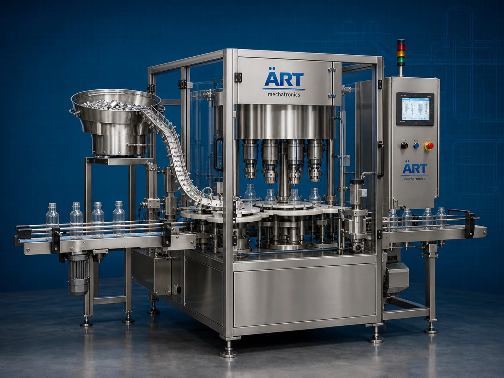

Container Crimping Machine (Automatic Bottle, Jar & Drum Crimp Sealing System)
A Container Crimping Machine, also known as a Bottle Crimping Machine, Cap Crimping Machine, Spray Pump Crimping Machine, or Automatic Container Crimp Sealing System, is an advanced industrial packaging solution designed for automatic container feeding, cap positioning, spray pump crimping, aluminum seal crimping, closure locking, sealing integration, coding, and high-speed packaging operations for bottles, jars, jugs, jerry cans, canisters, drums, gallons, aerosol containers, perfume bottles, pharmaceutical bottles, and industrial packaging containers.

About the Container Crimping Machine
Container crimping systems are widely used for:
- Perfume bottle crimping
- Spray pump sealing
- Pharmaceutical bottle crimping
- Aerosol container crimping
- Jar and jug closure sealing
- Drum closure locking
- Gallon cap crimping
- Industrial packaging sealing operations
The machine improves:
- Closure sealing accuracy
- Leak-proof packaging quality
- Product hygiene
- Tamper-proof packaging security
- Packaging consistency
- Production efficiency
- Transportation safety
Industrial container crimping machines use:
- Automatic cap feeding systems
- Servo synchronized crimping heads
- PLC and HMI automation controls
- Precision pressure control systems
- Conveyor synchronized handling systems
to automatically crimp and seal containers with superior closure integrity and high production efficiency.
Container crimping machines are widely used in industries such as:
Perfume industries Cosmetic industries Pharmaceutical industries Chemical industries Aerosol packaging industries Lubricant industries Food processing industries FMCG industries
where leak-proof sealing, tamper-proof packaging, and high-speed production are essential.
The machine is highly suitable for:
- Perfume bottle crimping
- Spray bottle sealing
- Aerosol container crimping
- Drum closure sealing
- Cosmetic bottle packaging
- Pharmaceutical bottle sealing
ART Mechatronics offers high-performance container crimping machines, engineered for continuous industrial operation, precision crimp sealing performance, hygienic packaging quality, and reliable long-term packaging automation.
Working Principle of Container Crimping Machine
- 1. Filled Container Feeding Filled containers are automatically fed into crimping section through synchronized conveyor systems.
- 2. Cap & Closure Positioning Process Machine automatically positions caps, spray pumps, or aluminum closures before crimping operation.
Servo synchronization ensures accurate closure positioning and smooth container handling.
- 3. Crimping Operation Machine handles: ✔ Spray pumps ✔ Aluminum caps ✔ Aerosol valves ✔ Perfume bottle closures ✔ Drum sealing closures ✔ Gallon caps ✔ Industrial container closures
accurately and continuously.
- 4. Precision Crimp Sealing Process Machine performs: Closure crimping Leak-proof sealing Tamper-proof locking Pressure controlled sealing Secure cap locking
for hygienic and transportation-safe packaging quality.
- 5. Coding & Inspection Integration Optional systems include: Batch coding Date printing QR code printing Vision inspection systems Seal integrity testing systems
- 6. Finished Container Discharge Crimp sealed containers discharged automatically for: Labeling Cartoning Case packing Warehouse storage Export shipment handling
Types of Container Crimping Machines
- 1. Perfume Bottle Crimping Machine Designed for: ✔ Perfume and cosmetic bottle packaging applications
- 2. Spray Pump Crimping Machine Suitable for: ✔ Spray bottle and cosmetic liquid packaging systems
- 3. Aerosol Container Crimping Machine Uses: ✔ Aerosol and pressurized packaging systems
- 4. Drum & Industrial Container Crimping Machine Designed for: ✔ Heavy-duty industrial packaging systems
- 5. Servo Driven Crimping Machine Suitable for: ✔ Precision high-speed crimp sealing operations
- 6. Fully Automatic Container Crimping System Designed for: ✔ Complete industrial packaging automation lines
Industries Using Container Crimping Machines
🧴 Cosmetic & Perfume Industry Perfumes, body sprays, cosmetic liquids, and premium bottle packaging systems. 💊 Pharmaceutical Industry Medicine bottles, healthcare packaging, and sterile closure sealing systems. ⚗️ Chemical Industry Industrial liquids, aerosol products, and chemical container sealing systems. 🥤 Beverage Industry Specialty beverage bottles and liquid packaging systems. 🛢️ Lubricant Industry Industrial oils and heavy-duty liquid packaging systems. 🛒 FMCG Industry Consumer liquid products and retail packaging systems.
Features & Advantages
- High-speed automatic container crimping operation
- Accurate pressure controlled crimp sealing systems
- Hygienic and leak-proof packaging quality
- PLC and servo automation control systems
- Improves packaging safety and transportation reliability
- Reduces manual crimping dependency
- Supports multiple closure types and container sizes
- Reliable long-term industrial performance
- Smooth and continuous packaging line integration
Technical Highlights
Machine Type: Automatic container crimping machine Industrial crimp sealing system Packaging closure machine Container Type: PET bottles Glass bottles Perfume bottles Jerry cans Drums Gallons Industrial containers Closure Compatibility: Spray pumps Aluminum caps Aerosol valves Perfume closures Industrial sealing caps Features: PLC control system Servo synchronization Touchscreen HMI Automatic cap feeding systems Pressure control systems Applications: Perfumes Cosmetic liquids Pharmaceutical products Chemicals Industrial liquids Aerosol products Automation: Semi-automatic Fully automatic industrial systems
Turnkey Container Crimping Solutions
ART Mechatronics offers: Complete crimp sealing systems Automatic container crimping solutions Packaging automation integration systems Conveyor synchronization systems Installation & commissioning After-sales service & AMC
Why Choose Art Mechatronics
Expertise in industrial packaging and automation systems Customized crimp sealing solutions for multiple industries High-performance and precision crimping technology Advanced PLC and servo automation systems Proven industrial packaging performance across sectors
Applications
Perfume Manufacturing Plants Cosmetic Packaging Industries Pharmaceutical Packaging Facilities Chemical Packaging Units Industrial Liquid Packaging Plants FMCG Packaging Industries
Industries that use the Container Crimping Machine
Get pricing & specs for the Container Crimping Machine
Share the product, target capacity, current process and plant location. These details help our engineers discuss the right machine or line configuration.
One partner, from design to start-up
ART Mechatronics designs, manufactures, installs and commissions your Container Crimping Machine solution with regional presence in India, UAE and Thailand.